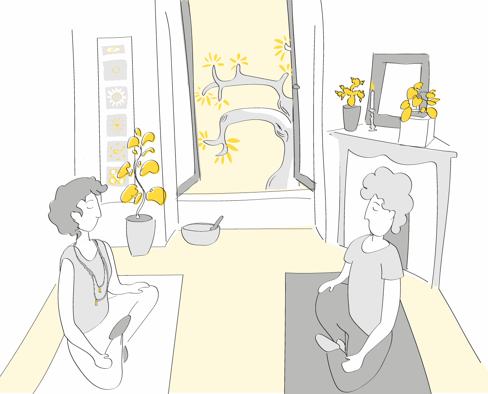
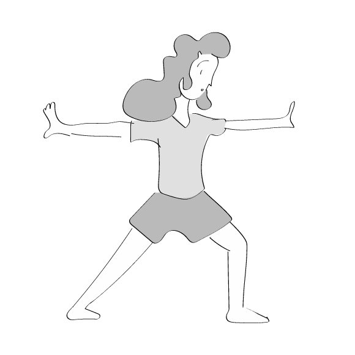
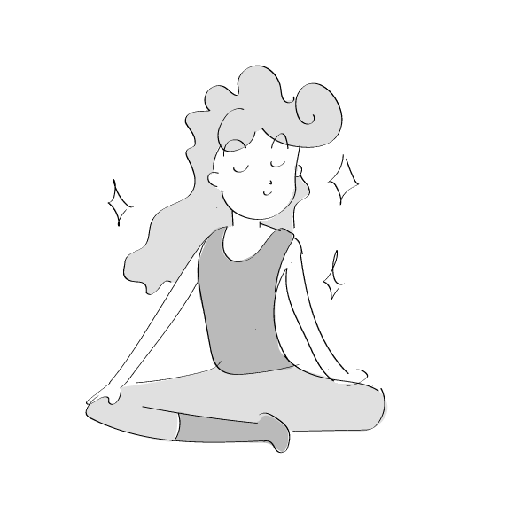
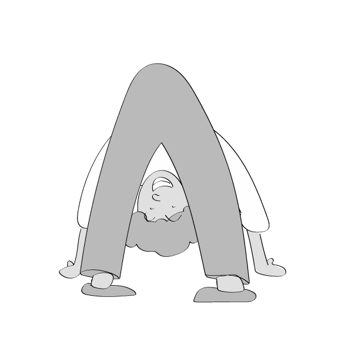
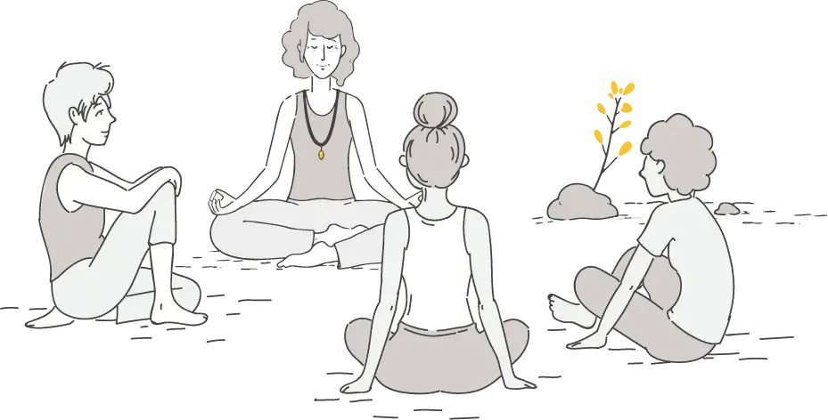

Yogathérapie
Comment acquérir des outils afin de devenir acteur dans son parcours de soin

La Yogathérapie : pour quoi, pour qui ?
Anxiété, Stress
- Anxiété, stress, troubles du sommeil
- Dépression
- État de stress post-traumatique
Pathologies
- Maux de dos
- Troubles digestifs
- Douleurs chroniques (HTA, diabète, fibromyalgie)
Soutien
- Accompagnement et soutien aux aidants
- Accompagnement lors de sevrage médicamenteux
- Accompagnement lors du traitement d'un cancer
- Accompagnement lors d'un parcours en PMA
La yogathérapie, qu'est-ce que c'est ?
La yogathérapie vous permet d'acquérir des outils pour prendre en main votre santé et votre bien-être.
La yogathérapie sélectionne et adapte des outils traditionnels du yoga pour être accessible à tous et atteindre les effets recherchés. Pour ce faire, elle s'appuie sur les connaissances et recherches scientifiques et médicales actuelles menées sur le yoga.
La yogathérapie est efficace. Elle prend en charge l'individu dans sa globalité. Grâce à des postures très simples, grâce à une mobilisation de la respiration et à un travail sur les pensées et les émotions, elle favorise la prise de conscience et le développement des ressources de l'être humain. Elle s'appuie sur la capacité naturelle du corps à se réguler et à trouver l'équilibre, l'homéostasie. Elle peut être suffisante ou venir en complément des traitements médicaux nécessaires suivant les cas.
Un parcours réussi en yogathérapie nécessite l'investissement de la personne dans une pratique régulière, idéalement quotidienne. L'accompagnement personnalisé et bienveillant vise à rendre la personne autonome.
Découvrir le métier de yogathérapeute (document PDF, nouvelle fenêtre)
Comment ça se passe ?
L'accompagnement se déroule généralement sur dix séances bi-mensuelles.
Par la suite, un rendez-vous mensuel, trimestriel ou semestriel peut être
proposé en fonction des besoins.
-
Le premier rendez-vous permet de faire un bilan global et de déterminer les objectifs de la prise en charge.
-
Les séances suivantes commencent par un entretien d'une vingtaine de minutes et un retour sur la pratique en autonomie.
-
Puis, en lien avec les objectifs déterminés au départ et avec l'entretien de début de séance, je propose généralement l'apprentissage d'une ou deux postures nouvelles, d'une respiration et d'une relaxation ou d'une méditation.
-
La personne part avec des enregistrements audios et vidéos si nécessaire pour pratiquer à la maison jusqu'au prochain rendez-vous.
La Yogathérapie pour les enfants et les adolescents
Anxiété, stress, phobies, difficultés scolaires, TDAH, TSA, TCA, Tocs, troubles du sommeil, addictions… J'accompagne votre enfant à travers des exercices adaptés à ses besoins.
Lors du premier rendez-vous, les parents sont présents. Nous déterminons ensemble les objectifs de la prise en charge.

À chaque séance, quelques outils sont proposés : mobilisation
corporelle, respiration, relaxation, visualisation… Ils sont
adaptés à l'âge de votre enfant et à ses possibilités.
Votre enfant repart avec une trace de ces exercices afin de pouvoir les
refaire à la maison.

Le succès de la prise en charge repose sur l'investissement
de l'enfant et la pratique quotidienne des exercices
proposés.
Je vous encourage, en tant que parent, à accompagner votre enfant et à
pratiquer les exercices avec lui en déterminant un temps dédié à ce
rendez-vous, au moins les premiers temps. Une quinzaine de minutes sont
suffisantes pour être efficaces.

La yogathérapie en petit groupe
Moins personnalisée que le suivi individuel, la yogathérapie peut également se pratiquer en petit groupe. Les séances réunissent 7 personnes maximum dans une pratique collective adaptée aux personnes présentes. Ces séances sont destinées aux personnes qui souhaitent se remettre en mouvement suite à une période d'arrêt pour cause de maladie, d'intervention chirurgicale ou de sédentarité prolongée.
Mouvements très simples, respirations, visualisations et temps d'échange sont proposés durant la séance. Un chemin en douceur pour se reconnecter à son corps, à ses ressentis et aller vers un état d'apaisement et de mieux-être physique et psychique.
Séances collectives à Au vent dans les branches, La Ciotat :
- Mercredi 17h30 – 18h45
- Jeudi 9h30 – 10h45
Voir sur le site d'Au vent dans les branches (nouvelle fenêtre)

Modalités
Tarifs
Adulte :
60 € (séance d'1h)
Enfant / adolescent :
60 € la 1re séance
(1h, parents présents)
puis 50 € (séance de 40 min)
Lieu
Centre Epignosis392 avenue Ernest Subilia
13600 La Ciotat
Et
Au vent dans les branches17 rue Emmanuel Barthélémy
13600 La Ciotat
Possibilité de séance à domicile